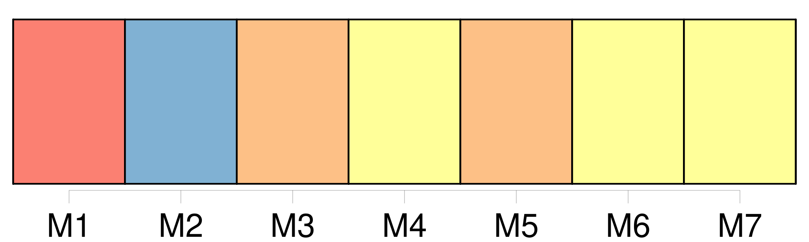
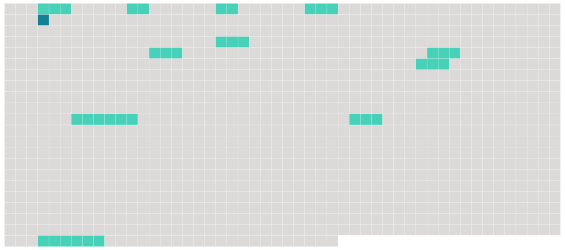

Longueur nb maillons : 12 mentions |
 |
La Commission nomme [un secrétaire exécutif] , définit les fonctions de [ce poste] ainsi que les conditions dans lesquelles [celui -ci] doit être rempli. [1 phrases]
[Le secrétaire exécutif] remplit les fonctions nécessaires à la gestion de la convention et aux travaux de la Commission, ainsi que les autres missions qui [lui] sont confiées par la Commission conformément à son règlement intérieur et à son règlement financier. [4 phrases] À l'expiration d'un délai de deux cents jours à compter de son adoption, une décision lie les parties contractantes qui l'ont votée et qui n'ont pas notifié par écrit [au secrétaire exécutif] dans ce délai leur incapacité à accepter cette décision, sous réserve qu'à l'expiration de ce délai, les trois quarts des parties contractantes aient, soit voté la décision sans retirer leur acceptation, soit notifié par écrit [au secrétaire exécutif] qu'elles sont en mesure d'accepter celle -ci.
Cette décision lie toute autre partie contractante qui a notifié par écrit [au secrétaire exécutif] qu'elle est en mesure d'accepter la décision, soit à compter de cette notification, soit à l'expiration d'un délai de deux cents jours après l'adoption de la décision, si cette date est postérieure. [1 phrases]
Une notification faite [au secrétaire exécutif] en vertu du paragraphe 2 du présent article peut indiquer qu'une partie contractante n'est pas en mesure d'accepter une décision pour ce qui concerne un ou plusieurs de ses territoires autonomes ou dépendants auxquels s'applique la convention. [14 phrases] Le texte de l'amendement proposé est communiqué aux parties contractantes par [le secrétaire exécutif de la Commission] au moins six mois avant la réunion de la Commission au cours de laquelle son adoption est proposée.
[Le secrétaire exécutif] communique également le projet d'amendement aux signataires de la convention pour information. [19 phrases]
Le texte du projet d'amendement est communiqué par [le secrétaire exécutif de la Commission] à toutes les parties contractantes à la convention, selon les modalités prévues au paragraphe 2 de l'article 15. |
 |
Il est possible de télécharger la ressource sur la page Ortolang |
Si vous avez des questions ou vous voyez des erreurs, merci d'envoyer un mail à silvia.federzoni89@gmail.com |